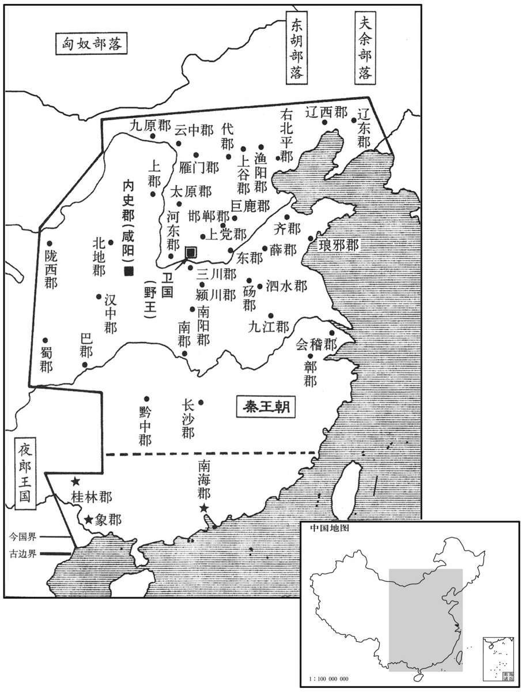

公元前214年资治通鉴：本年记事、原文与白话对照
按原书编年位置阅读；追叙和史论不等于本年发生的事件。白话采用所据译本，缺译不以生成译文补齐。
卷7 · 本年记事
公元前214年 · 始皇帝在位第33年
三十三年〔（丁亥、前二一四）〕
本年事件索引（现代整理）

本年形势与背景参考图
发诸尝逋亡人、赘婿、贾人为兵，〔贾谊曰：秦人家贫子壮则出赘。师古曰：谓之赘婿，言其不当出在妻家，犹人身之有朊赘也。转货贩易者为商，坐市贩卖者为贾。赘，之锐翻。〕略取南越陆梁地，〔索隐曰：谓南方之人，其性陆梁，故曰陆梁地。班表，汉高帝功臣有陆量侯须无，诏以为列诸侯，自置吏令、长，受令长沙王。如淳曰：陆量，秦始皇本纪所谓陆梁地也。〕置桂林、南海、象郡；〔桂林因产桂而名。合浦以南，山间无杂木，冬夏长青，叶长尺余。文颖曰：桂林，今郁林。师古曰：桂林，今桂州界是其地，非郁林也。南海郡，今广州。茂陵书曰：象郡治临尘，去长安万七千五百里。韦昭曰：今日南是也。〕以谪徙民五十万人戍五岭，与越杂处。〔所谓谪戍也。晋志曰：自北徂南，入越之道，必由岭峤；时有五处，故曰五岭。师古曰：岭者，西自衡山之南，东穷于海，一山之限耳，而别标名，则有五焉。裴氏广州记曰：大庾、始安、临贺、桂阳、揭阳为五岭。邓德明南康记曰：大庾岭，一也；桂阳骑田岭，二也；九真都庞岭，三也；临贺萌渚岭，四也；始安越城岭，五也。师古以裴说为是。蜀注曰：大庾岭在虔州；永明岭、白芒岭在道州；腊岭在郴州；临源岭在桂州。谪，则革翻。处，昌吕翻。〕
秦朝廷征召那些曾经逃亡的人、因贫穷而入赘女家的男子、商贩等入伍当兵，攻掠夺取南越的陆梁地，设置了桂林、南海、象郡等郡；并将受贬谪的人五十万流放到五岭守边，与南越的本地人杂居一处。
蒙恬斥逐匈奴，收河南地为四十四县。筑长城，因地形，用制险塞；起临洮至辽东，延袤万余里。于是渡河，据阳山，逶迤而北。〔师古曰：河南地当北地之北，黄河之南。余按，河出积石，过金城、陇西、安定、北地郡界，皆东北流；北过朔方、窳浑间，方屈而东南流，迳高阙南；又自临河县东迳阳山南，徐广所谓阳山在河北、阴山在河南者。刘昭曰：二山皆属五原郡西安阳县。班志，临洮县属陇西郡。洮水出西羌中，北至枹罕东入河。县临洮水，因以为名。洮，土刀翻。延，长行也。南北曰袤。袤，音茂。逶，于为翻。迤，以支翻。〕暴师于外十余年，蒙恬常居上郡统治之；威振匈奴。〔暴，读如字；刘伯庄音仆。括地志：上郡故城在绥州上县东南五十里。〕
秦将蒙恬率军驱逐斥退匈奴人，收复了黄河以南地区，设置四十四个县。接着就修筑长城，凭借地形而建，用以控制险关要塞，起自临洮，直至辽东，绵延一万多里。蒙恬于是又领兵渡过黄河，占据阳山，向北曲折前进。军队在野外扎营风餐露宿十余年，蒙恬则常驻上郡指挥军队，威震匈奴。